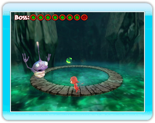

8 |
Hauptmenü |
 |
Bewege den Control Stick nach oben und unten, um dich durch das Menü zu bewegen. Drücke den A-Knopf zur Wahl einer Menüoption und den B-Knopf, um zum vorigen Menü zurückzukehren.
Spiel laden Wähle diese Option, um ein zuvor gespeichertes Spiel fortzusetzen.
Neues Spiel Starte ein neues COCOTO-Platform-Jumper-Spiel. Drücke den A-Knopf zur Bestätigung und zur Anzeige des Unterbildschirms. Das Spiel startet am Anfang, sobald du eine der drei Schwierigkeitsstufen (einfach, normal, schwierig) gewählt hast.
High Scores Zeigt die 10 höchsten Punktzahlen des COCOTO-Platform-Jumper-Spiels.
Kampf (2 Spieler) Wähle diesen Modus, um einen Zwei-Spieler-Kampf zu starten! Mit dem Control Stick wählst du Spielfigur und Spiel-Level.
Rennen (2 bis 4 Spieler) Fordere deine Freunde heraus in diesem originellen Spielmodus für 2 bis 4 Spieler. Mit dem Control Stick wählst du Spielfigur und Spiel-Level.
Optionen Stelle Spielparameter wie Sound. |
 |
 |
 |